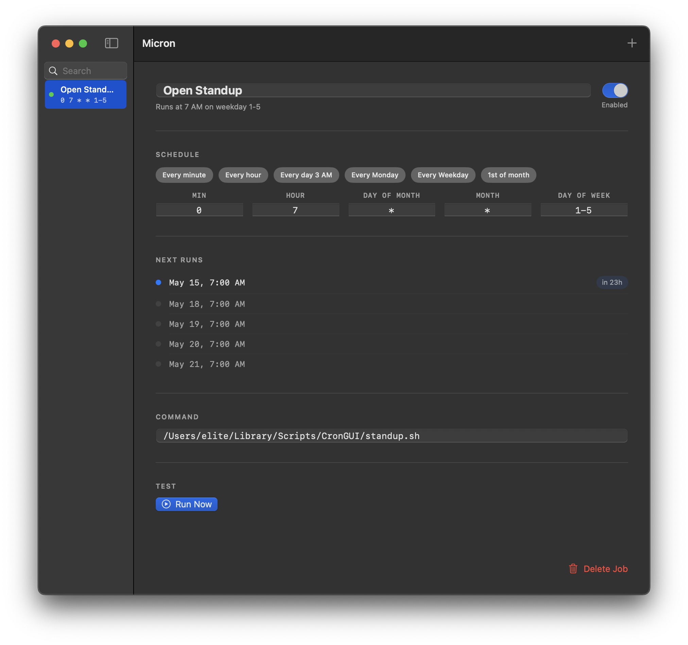

A native macOS app for managing cron jobs. No terminal required. Reads and writes your crontab directly, so existing jobs always stay intact.
Download Free
All your cron jobs in one place. Add, edit, and delete without touching the terminal.
Pick a preset or configure fields directly. See a plain-English description as you go.
Upcoming execution times shown for every job so you always know what runs and when.
Search across job names, commands, and schedules instantly across your full crontab.